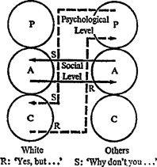

8 · Party Games
PARTIES are for pastimes, and pastimes are for parties (including the period before a group meeting officially begins), but as acquaintanceship ripens, games begin to emerge. The Schlemiel and his victim recognize each other, as do Big Daddy and Little Old Me; all the familiar but disregarded processes of selection get under way. In this section four games which are typically played in ordinary social situations are considered: ‘Ain’t It Awful’, ‘Blemish’, ‘Schlemiel’, and ‘Why Don’t You – Yes But’.
1 · AIN’T IT AWFUL
Thesis. This is played in four significant forms: Parental pastime, Adult pastime, Child pastime and game. In the pastimes there is no denouement or payoff, but much unworthy feeling.
1. ‘Nowadays’ is the self-righteous, punitive or even vicious Parental pastime. Sociologically it is common among certain types of middle-aged women with small independent incomes. One such woman withdrew from a therapy group when her opening move was met with silence instead of with the excited corroboration she was accustomed to in her social circle. In this more sophisticated group, accustomed to game analysis, there was a conspicuous lack of togetherness when White remarked: ‘Speaking of not trusting people, it’s no wonder you can’t trust anyone nowadays. I was looking through the desk of one of my roomers, and you won’t believe what I found.’ She knew the answers to most of the current community problems: juvenile delinquency (parents too soft nowadays); divorce (wives without enough to do to keep them busy nowadays); crime (foreigners moving into white neighbourhoods nowadays); and rising prices (businessmen too grasping nowadays). She made it clear that she herself was not soft with her delinquent son, nor with her delinquent tenants.
‘Nowadays’ is differentiated from idle gossip by its slogan ‘It’s no wonder’. The opening move may be the same (‘They say that Flossie Murgatroyd’), but in ‘Nowadays’ there is direction and closure; an ‘explanation’ may be offered. Idle gossip merely rambles or trails off.
2. ‘Broken Skin’ is the more benevolent Adult variation, with the slogan ‘What a pity!’ although the underlying motivations are equally morbid. ‘Broken Skin’ deals primarily with the flow of blood; it is essentially an informal clinical colloquium. Anyone is eligible to present a case, the more horrifying the better, and details are eagerly considered. Blows in the face, abdominal operations and difficult childbirths are accepted topics. Here the differentiation from idle gossip lies in the rivalry and surgical sophistication. Pathological anatomy, diagnosis, prognosis and comparative case studies are systematically pursued. A good prognosis is approved in idle gossip, but in ‘Broken Skin’ a consistently hopeful outlook, unless obviously insincere, may invoke a secret meeting of the Credentials Committee because the player is non particeps criminis.
3. ‘Water Cooler’, or ‘Coffee Break’, is the Child pastime, with the slogan ‘Look what they’re doing to us now.’ This is an organizational variant. It may be played after dark in the milder political or economic form called ‘Bar Stool’. It is actually three-handed, the ace being held by the often shadowy figure called ‘They’.
4. As a game, ‘Ain’t It Awful’ finds its most dramatic expression in polysurgery addicts, and their transactions illustrate its characteristics. These are doctor-shoppers, people who actively seek surgery even in the face of sound medical opposition. The experience itself, the hospitalization and surgery, brings its own advantages. The internal psychological advantage comes from having the body mutilated; the external psychological advantage lies in the avoidance of all intimacies and responsibilities except complete surrender to the surgeon. The biological advantages are typified by nursing care. The internal social advantages come from the medical and nursing staff, and from other patients. After the patient’s discharge the external social advantages are gained by provoking sympathy and awe. In its extreme form this game is played professionally by fraudulent or determined liability and malpractice claimants, who may earn a living by deliberately or opportunistically incurring disabilities. They then demand not only sympathy, as amateur players do, but indemnification. ‘Ain’t It Awful’ becomes a game, then, when the player overtly expresses distress, but is covertly gratified at the prospect of the satisfactions he can wring from his misfortune.
In general, people who suffer misfortunes may be divided into three classes.
1. Those in whom the suffering is inadvertent and unwanted. These may or may not exploit the sympathy which is so readily offered to them. Some exploitation is natural enough, and may be treated with common courtesy.
2. Those in whom the suffering is inadvertent, but is gratefully received because of the opportunities for exploitation it offers. Here the game is an afterthought, a ‘secondary grain’ in Freud’s sense.
3. Those who seek suffering, like polysurgery addicts who go from one surgeon to another until they find one willing to operate. Here the game is the primary consideration.
2 · BLEMISH
Thesis. This game is the source of a large percentage of petty dissension in everyday life; it is played from the depressive Child position ‘I am no good’, which is protectively transformed into the Parental position ‘They are no good.’ The player’s transactional problem is, then, to prove the latter thesis. Hence ‘Blemish’ players do not feel comfortable with a new person until they have found his blemish. In its hardest form it may become a totalitarian political game played by ‘authoritarian’ personalities, and then it may have serious historical repercussions. Here its close relationship with ‘Nowadays’ is evident. In suburban society positive reassurance is obtained from playing ‘How’m I Doing?’ while ‘Blemish’ provides negative reassurance. A partial analysis will make some of the elements of this game clearer.
The premise may range from the most trivial and extraneous (‘Last year’s hat’), to the most cynical (‘Hasn’t got $7,000 in the bank’), sinister (‘Not 100 % Aryan’), esoteric (‘Hasn’t read Rilke’) intimate (‘Can’t hold his erection’) or sophisticated (‘What’s he trying to prove?’). Psychodynamically it is usually based on sexual insecurity, and its aim is reassurance. Transactionally there is prying, morbid curiosity or watchfulness, sometimes with Parental or Adult concern charitably masking the Child’s relish. It has the internal psychological advantage of warding off depression, and the external psychological advantage of avoiding the intimacy which might expose White’s own blemishes. White feels justified in turning away an unfashionable woman, a man without financial backing, a non-Aryan, an illiterate, an impotent man or an insecure personality. At the same time the prying offers some internal social action with biological gain. The external social advantage is of the ‘Ain’t It Awful’ family – Neighbourly Type.
An interesting sidelight is that White’s choice of premise is independent of his intellectual capacity or apparent sophistication. Thus a man who had held some responsible positions in the foreign service of his country told an audience that another country was inferior because, among other things, the men wore jackets with sleeves that were too long. In his Adult ego state this man was quite competent. Only when playing a Parental game like ‘Blemish’ would he mention such irrelevancies.
3 · SCHLEMIEL
Tliesis. The term ‘schlemiel’ does not refer to the hero of Chamisso’s novel,1 who was a man without a shadow, but to a popular Yiddish word allied to the German and Dutch words for cunning. The Schlemiel’s victim, who is something like the ‘Good-Natured Fellow’ of Paul de Kock,2 is colloquially called the Schlemazl. The moves in a typical game of ‘Schlemiel’ are as follows:
1W. White spills a highball on the hostess’s evening gown.
1B. Black (the host) responds initially with rage, but he senses (often only vaguely) that if he shows it, White wins. Black therefore pulls himself together, and this gives him the illusion that he wins.
2W. White says: ‘I’m sorry.’
2B. Black mutters or cries forgiveness, strengthening his illusion that he wins.
3W. White then proceeds to inflict other damage on Black’s property. He breaks things, spills things and makes messes of various kinds. After the cigarette burn in the tablecloth, the chair leg through the lace curtain and the gravy on the rug, White’s Child is exhilarated because he has enjoyed himself in carrying out these procedures, for all of which he has been forgiven, while Black has made a gratifying display of suffering self-control. Thus both of them profit from an unfortunate situation, and Black is not necessarily anxious to terminate the friendship.
As in most games, White, who makes the first move, wins either way. If Black shows his anger, White can feel justified in returning the resentment. If Black restrains himself, White can go on enjoying his opportunities. The real payoff in this game, however, is not the pleasure of destructiveness, which is merely an added bonus for White, but the fact that he obtains forgiveness.* This leads directly into the antithesis.
Antithesis. Anti-‘Schlemiel’ is played by not offering the demanded absolution. After White says ‘I’m sorry’, Black, instead of muttering ‘It’s okay’, says, ‘Tonight you can embarrass my wife, ruin the furniture and wreck the rug, but please don’t say “I’m sorry”.’ Here Black switches from being a forgiving Parent to being an objective Adult who takes the full responsibility for having invited White in the first place.
The intensity of White’s game will be revealed by his reaction, which may be quite explosive. One who plays anti-‘Schlemiel’ runs the risk of immediate reprisals or, at any rate, of making an enemy.
Children play ‘Schlemiel’ in an abortive form in which they are not always sure of forgiveness but at least have the pleasure of making messes; as they learn to comport themselves socially, however, they may take advantage of their increasing sophistication to obtain the forgiveness which is the chief goal of the game as played in polite, grown-up social circles.
ANALYSIS
Thesis: I can be destructive and still get forgiveness.
Aim: Absolution.
Roles: Aggressor, Victim (colloquially, Schlemiel and Schlemazl).
Dynamics: Anal aggression.
Examples: (1) Messily destructive children. (2) Clumsy guest. Social Paradigm: Adult-Adult.
Adult: ‘Since I’m polite, you have to be polite, too.’
Adult: ‘That’s fine. I forgive you.’
Psychological Paradigm: Child-Parent.
Child: ‘You have to forgive things which appear accidental.’
Parent: ‘You are right. I have to show you what good manners are.’
Moves: (1) Provocation-resentment. (2) Apology-forgiveness.
Advantages: (1) Internal Psychological – pleasure of messing. (2) External Psychological – Avoids punishment. (3) Internal Social – ‘Schlemiel.’ (4) External Social – ‘Schlemiel.’ (5) Biological – provocative and gentle stroking. (6) Existential – I am blameless.
4 · WHY DON’T YOU – YES BUT
Thesis. ‘Why Don’t You – Yes But’ occupies a special place in game analysis, because it was the original stimulus for the concept of games. It was the first game to be dissected out of its social context, and since it is the oldest subject of game analysis, it is one of the best understood. It is also the game most commonly played at parties and in groups of all kinds, including psychotherapy groups. The following example will serve to illustrate its main characteristics:
White: ‘My husband always insists on doing our own repairs, and he never builds anything right.’
Black: ‘Why doesn’t he take a course in carpentry?’
White: ‘Yes, but he doesn’t have time.’
Blue: ‘Why don’t you buy him some good tools?’
White: ‘Yes, but he doesn’t know how to use them.’
Red: ‘Why don’t you have your building done by a carpenter?’
White: ‘Yes, but that would cost too much.’
Brown: ‘Why don’t you just accept what he does the way he does it?’
White: ‘Yes, but the whole thing might fall down.’
Such an exchange is typically followed by a silence. It is eventually broken by Green, who may say something like, ‘That’s men for you, aways trying to show how efficient they are.’
YDYB can be played by any number. The agent presents a problem. The others start to present solutions, each beginning with ‘Why don’t you …?’ To each of these White objects with a ‘Yes, but …’ A good player can stand off the others indefinitely until they all give up, whereupon White wins. In many situations she might have to handle a dozen or more solutions to engineer the crestfallen silence which signifies her victory, and which leaves the field open for the next game in the above paradigm, Green switching into ‘PTA’, Delinquent Husband Type.
Since the solutions are, with rare exceptions, rejected, it is apparent that this game must serve some ulterior purpose. YDYB is not played for its ostensible purpose (an Adult quest for information or solutions), but to reassure and gratify the Child. A bare transcript may sound Adult, but in the living tissue it can be observed that White presents herself as a Child inadequate to meet the situation; whereupon the others become transformed into sage Parents anxious to dispense their wisdom for her benefit.

Figure 8. Why Don’t You – Yes But
This is illustrated in Figure 8. The game can proceed because at the social level both stimulus and response are Adult to Adult, and at the psychological level they are also complementary, with Parent to Child stimulus (‘Why don’t you …’) eliciting Child to Parent response (‘Yes, but …’). The psychological level is usually unconscious on both sides, but the shifts in ego state (Adult to ‘inadequate’ Child on White’s part, Adult to ‘wise’ Parent by the others) can often be detected by an alert observer from changes in posture, muscular tone, voice and vocabulary.
In order to illustrate the implications, it is instructive to follow through on the example given above.
Therapist: ‘Did anyone suggest anything you hadn’t thought of yourself?’
White: ‘No, they didn’t. As a matter of fact, I’ve actually tried almost everything they suggested. I did buy my husband some tools, and he did take a course in carpentry.’
Here White demonstrates two of the reasons why the proceedings should not be taken at face value. First, in the majority of cases White is as intelligent as anyone else in the company, and it is very unlikely that others will suggest any solution that she has not thought of herself. If someone does happen to come up with an original suggestion, White will accept it gratefully if she is playing fair; that is, her ‘inadequate’ Child will give way if anyone present has an idea ingenious enough to stimulate her Adult. But habitual YDYB players, such as White above, seldom play fair. On the other hand, a too ready acceptance of suggestions raises the question of whether the YDYB is not masking an underlying game of ‘Stupid’.
The example given is particularly dramatic, because it clearly illustrates the second point. Even if White has actually tried some of the solutions presented, she will still object to them. The purpose of the game is not to get suggestions, but to reject them.
While almost anyone will play this game under proper circumstances because of its time-structuring value, careful study of individuals who particularly favour it reveals several interesting features. First, they characteristically can and will play either side of the game with equal facility. This switchability of roles is true of all games. Players may habitually prefer one role to another, but they are capable of trading, and they are willing to play any other role in the same game if for some reason that is indicated. (Compare, for example, the switch from Drinker to Rescuer in the game of ‘Alcoholic’.)
Second, in clinical practice it is found that people who favour YDYB belong to that class of patients who eventually request hypnosis or some sort of hypnotic injection as a method of speeding up their treatment. When they are playing the game, their object is to demonstrate that no one can give them an acceptable suggestion – that is, they will never surrender; whereas with the therapist, they request a procedure which will put them in a state of complete surrender. It is thus apparent that YDYB represents a social solution to a conflict about surrender.
Even more specifically, this game is common among people who have a fear of blushing, as the following therapeutic exchange demonstrates:
Therapist: ‘Why do you play “Why Don’t You – Yes But” if you know it’s a con?’
White: ‘If I’m talking to somebody I have to keep thinking of things to say. If I don’t, I’ll blush. Except in the dark. I can’t stand a lull. I know it, and my husband knows it, too. He’s always told me that.’
Therapist: ‘You mean if your Adult doesn’t keep busy, your Child takes the chance to pop up and make you feel embarrassed?’
White: ‘That’s it. So if I can keep making suggestions to somebody, or get him to make suggestions to me, then I’m all right, I’m protected. As long as I can keep my Adult in control, I can postpone the embarrassment.’
Here White indicates clearly that she fears unstructured time. Her Child is prevented from advertising as long as the Adult can be kept busy in a social situation, and a game offers a suitable structure for Adult functioning. But the game must be suitably motivated in order to maintain her interest. Her choice of YDYB is influenced by the principle of economy: it yields the maximum internal and external advantages to her Child’s conflicts about physical passivity. She could play with equal zest either the shrewd Child who cannot be dominated or the sage Parent who tries to dominate the Child in someone else, but fails. Since the basic principle of YDYB is that no suggestion is ever accepted, the Parent is never successful. The motto of the game is: ‘Don’t get panicky, the Parent never succeeds.’
In summary, then: while each move is amusing, so to speak, to White, and brings its own little pleasure in rejecting the suggestion, the real payoff is the silence or masked silence which ensues when all the others have racked their brains and grown tired of trying to think of acceptable solutions. This signifies to White and to them that she has won by demonstrating it is they who are inadequate. If the silence is not masked, it may persist for several minutes. In the paradigm, Green cut White’s triumph short because of her eagerness to start a game of her own, and that was what kept her from participating in White’s game. Later on in the session, White demonstrated her resentment against Green for having abridged her moment of victory.
Another curious feature of YDYB is that the external and internal games are played exactly the same way, with the roles reversed. In the external form, the one observed clinically, White’s Child comes out to play the role of the inadequate help-seeker in a many-handed situation. In the internal form, the more intimate two-handed game played at home with her husband, her Parent comes out as the wise, efficient suggestion-giver. This reversal is usually secondary, however, since during the courtship she plays the helpless Child side, and only after the honeymoon is over does her bossy Parent begin to emerge into the open. There may have been slips as the wedding approached, but her fiancé will overlook these in his eagerness to settle down with his carefully chosen bride. If he does not overlook them, the engagement may be called off for ‘good reasons’, and White, sadder but no wiser, will resume her search for a suitable mate.
Antithesis. It is evident that those who respond to White’s first move, the presentation of her ‘problem’, are playing a form of ‘I’m Only Trying to Help You’ (ITHY). In fact YDYB is the inverse of ITHY. In ITHY there is one therapist and many clients; in YDYB one client and many ‘therapists’. The clinical antithesis to YDYB, therefore, is not to play ITHY. If the opening is of the form: ‘What do you do if …’ (WYDI), a suggested response is: ‘That is a difficult problem. What are you going to do about it?’ If it is of the form: ‘X didn’t work out properly’, the response then should be ‘That is too bad.’ Both of these are polite enough to leave White at a loss, or at least to elicit a crossed transaction, so that his frustration becomes manifest and can then be explored. In a therapy group it is good practice for susceptible patients to refrain from playing ITHY when invited. Then not only White, but the other members as well, can learn from anti-YDYB, which is merely the other side of anti-ITHY.
In a social situation, if the game is friendly and harmless, there is no reason not to participate. If it is an attempt to exploit professional knowledge, an antithetical move may be required; but in such situations this arouses resentment because of the exposure of White’s Child. The best policy under those circumstances is to flee from the opening move and look for a stimulating game of first-degree ‘Rapo’.
Relatives. ‘Why Don’t You – Yes But’ must be distinguished from its obverse, ‘Why Did You – No But’ (YDNB), in which it is the Parent who wins and the defensive Child who eventually retires in confusion, although again the bare transcript may sound factual, rational and Adult to Adult. YDNB is closely related to ‘Furthermore’.
The reverse of YDYB at first resembles ‘Peasant’. Here White seduces the therapist into giving her suggestions which she immediately accepts, rather than rejects. Only after he is deeply involved does he perceive that White is turning on him. What looked like ‘Peasant’ ends up as a game of intellectual ‘Rapo’. The classical version of this is the switch from positive to negative transference in the course of orthodox psychoanalysis.
YDYB may also be played in a second-degree hard form as ‘Do Me Something’. The patient refuses to do the housework, for example, and there is a game of YDYB every evening, when the husband returns home. But no matter what he says, she sullenly refuses to change her ways. In some cases the sullenness may be malignant and require careful psychiatric evaluation. The game aspect must be considered as well, however, since it raises the question of why the husband selected such a spouse, and how he contributes to maintaining the situation.
ANALYSIS
Thesis: See if you can present a solution I can’t find fault with.
Aim: Reassurance.
Roles: Helpless person, Advisers.
Dynamics: Surrender conflict (oral).
Examples: (1) Yes, but I can’t do my homework now because … (2) Helpless wife.
Social Paradigm: Adult-Adult.
Adult: ‘What do you do if …’
Adult: ‘Why don’t you …’
Psychological Paradigm: Parent-Child.
Parent: ‘I can make you grateful for my help.’
Child: ‘Go ahead and try.’
Moves: (1) Problem-Solution. (2) Objection-Solution. (3) Objection-Disconcertion.
Advantages: (1) Internal Psychological – reassurance. (2) External Psychological – avoids surrender. (3) Internal Social –YDYB, Parental role. (4) External Social – YDYB, Child role. (5) Biological – rational discussion. (6) Existential – Everybody wants to dominate me.
REFERENCES
1. von Chamisso, Adelbert, Peter Schlemiel, Calder, 1957.
2. de Kock, Paul. One of the most popular works of this nineteenth-century librettist and novelist is A Good-Natured Fellow, about a man who gives away too much.